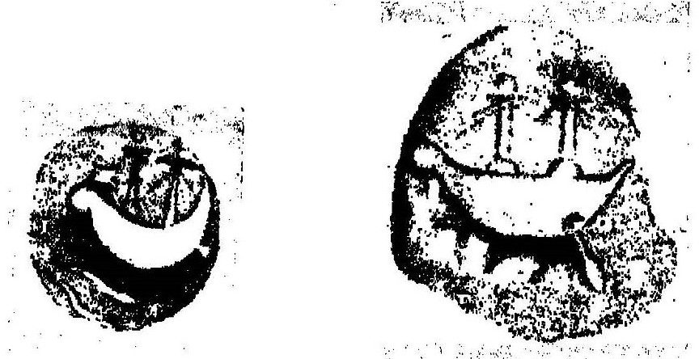
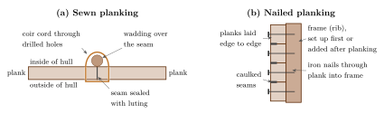
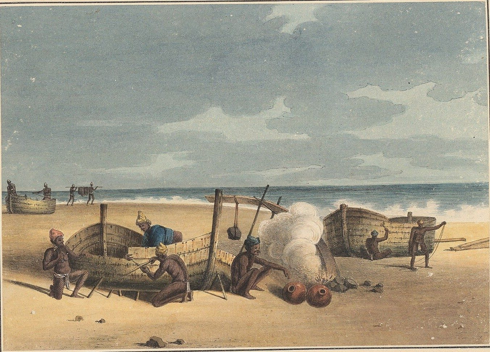
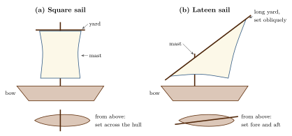
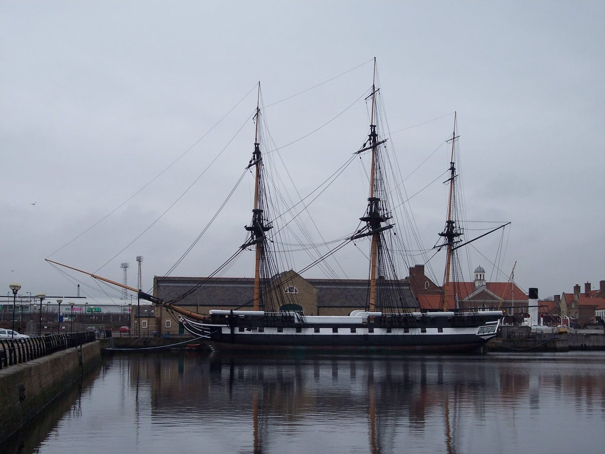
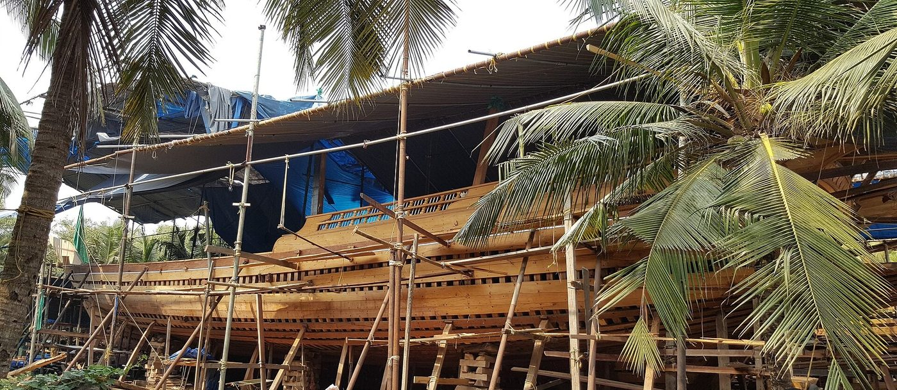

Chapter 13: Ships and Shipbuilding¶
Chapter Overview
Very few ancient or medieval ships from Indian waters have been excavated. What we know of them comes from scattered images, from the remarks of Greek, Arab, Chinese and European observers, from a small number of Sanskrit and Tamil texts, and from the boats that are still built on the coasts of South Asia. This chapter sets out that evidence and its limits. It describes the sewn-plank tradition of the western Indian Ocean and the few shipwrecks that now document it, contrasts it with the lashed-lug ships of Southeast Asia and the Chinese junk, surveys the regional craft of the subcontinent, and explains why the ship lore of the Yuktikalpataru should be read as a textual typology rather than as a record of engineering. It ends with the shipyards of the early modern period, from Surat and the Konkan forts to the Bombay Dockyard of the Wadia master builders, and with the wooden-ship builders who still work at Beypore and Mandvi.
Writing on Indian ships has long been shaped by two opposite distortions. Radhakumud Mookerji’s Indian Shipping (Mookerji 1912), written in the years of the Swadeshi movement, gathered every textual reference to ships it could find into a picture of a great Indian maritime tradition, and its claims are still widely repeated. Older European scholarship, on the other hand, tended to treat the Indian Ocean as a sea sailed mainly by Greeks, Arabs and later Europeans. The evidence supports neither view. It shows a shared ocean in which shipbuilders on many coasts, Indian, Arab, Persian, East African, Southeast Asian and Chinese, worked within a few broad technical traditions and borrowed from each other over many centuries (McGrail et al. 2003; Ray 2003; Hourani 1995).
13.1 The Evidence and Its Limits¶
Five kinds of evidence are available, and each has its own weakness (Table 13.1).
| Kind of source | Examples | Limits |
|---|---|---|
| Excavated hulls | Very few in Indian waters; the ninth-century Belitung wreck in Indonesia is the best-known sewn ship of the western Indian Ocean type | Wood rarely survives in warm seas; most finds are cargoes, anchors and fittings |
| Images | Indus seals and a terracotta model from Lothal; early Buddhist reliefs; Sātavāhana ship coins; the Ajanta paintings; temple reliefs; the Borobudur reliefs in Java | Artistic conventions, small scale; not technical drawings |
| Texts | Periplus; Arthaśāstra; Jātakas; Tamil Caṅkam poems; the Yuktikalpataru | Literary or normative; technical terms often obscure |
| Travellers and merchants | Marco Polo, Ibn Baṭṭūṭa, Chinese officials, Portuguese and later European writers | Outsiders’ views; prone to generalisation |
| Ethnography | Boats recorded on the coasts of South Asia in the nineteenth and twentieth centuries | Shows recent practice; continuity with the past must be argued, not assumed |
The most systematic modern work is ethnographic and archaeological. Seán McGrail and his colleagues recorded the traditional boats of the coasts of India, Pakistan, Bangladesh and Sri Lanka in the 1990s, and their survey remains the basis for any discussion of South Asian boatbuilding (McGrail et al. 2003); McGrail’s world survey places these boats in a comparative frame (McGrail 2001). Jean Deloche’s volume on water transport collects the textual and iconographic evidence for river and sea craft (Deloche 1993), and Himanshu Prabha Ray discusses the archaeology of seafaring, including the images of ships (Ray 2003). Arab ships are treated by George Hourani (Hourani 1995), and Southeast Asian and Chinese ships by Pierre-Yves Manguin (Manguin 1993).
13.2 Early Representations and Early Texts¶
The earliest images of boats in South Asia come from the Harappan cities. A few seals and moulded tablets show craft with a high bow and stern and a cabin amidships, and a terracotta model from Lothal has been read as a boat with a socket for a mast. These images are too schematic to reconstruct a sea-going hull (McGrail et al. 2003); the debate over the basin at Lothal is set out in Section 11.3.
For the early historic period, the most precise descriptions are those of the Periplus Maris Erythraei (mid-first century CE). Its author names several kinds of local craft. At Barygaza (Bharuch), fishermen in the king’s service went out in boats called trappaga and kotymba to meet incoming ships and tow or pilot them up the river (§44). On the Tamil coast he distinguishes local coasting craft, large vessels called sangara made of single logs fastened together, and very large ships called kolandiophōnta that sailed to Chrysē (Southeast Asia) and the Ganga (§60). He also mentions ships from Barygaza and Ariakē that carried grain, rice, cloth and other goods to the Horn of Africa (§14), so Indian-owned vessels were plainly at sea in the western Indian Ocean (Casson 1989). The words are Greek renderings of local names, and their exact meaning is uncertain; sangara may be related to Tamil and Malayalam words for a raft or double canoe.
The Arthaśāstra (Chapter 2) assigns to a superintendent of shipping (nāvadhyakṣa, AŚ 2.28) the supervision of ferries, boat hire, tolls in port towns, the treatment of ships damaged by storms, and the destruction of pirate ships. It is concerned with administration and revenue, not with how ships were built (Olivelle 2013); port administration is discussed in Chapter 15. The Pali Jātakas describe voyages from Bharukaccha, Campā and other ports in ships that carry merchants by the hundred. Such numbers are stock formulas of the story-tellers and cannot be used to estimate the size of real ships.
Three groups of images deserve mention. First, lead coins showing a ship with two masts (Figure 13.1a), found mainly in the coastal districts of Andhra and on the Coromandel coast, are commonly attributed to the Sātavāhana king Yajña Śrī Sātakarṇi (late second century CE); the attribution of some specimens is debated, but the coins show that a coastal kingdom thought a sea-going ship a suitable emblem (see also Chapter 5) (Ray 2003). Second, a painting at Ajanta (Figure 13.1b), usually placed in Cave 2 and dated to the late fifth century CE, shows a sea-going ship with several masts in a narrative scene; it has been reproduced since Mookerji’s time as a picture of an “Indian ship”, but like the reliefs at Sanchi and Bharhut it follows the conventions of narrative art rather than recording the details of a real hull. Third, the reliefs of Borobudur in Central Java (c. 800 CE; Figure 16.1) show large ships with outriggers and tilted rectangular sails. They are Javanese ships, built in the Southeast Asian tradition described below, and are discussed in Chapter 16; they are not evidence for Indian shipbuilding.


13.3 Sewn Boats of the Western Indian Ocean¶
The characteristic ship of the Arabian Sea from antiquity to the early modern period was the sewn-plank boat. Its hull planks were laid edge to edge and fastened by cords passed through holes drilled near the plank edges, usually in a continuous pattern of stitches along each seam. The cord was normally of coir, the fibre of the coconut husk, which resists seawater well. Wadding of fibre and a luting of resin, oil or other compounds sealed the seams, and frames were inserted after the planking had been raised, so that the shape of the hull was set by the planks rather than by a pre-erected skeleton (“plank-first” or “shell-first” construction) (McGrail et al. 2003; Hourani 1995).
The technique is old and widespread. The Periplus says that the port of Rhapta on the East African coast took its name from the sewn boats used there (§16) and that sewn boats called madarate were exported from Omana in the Gulf to Arabia (§36) (Casson 1989). Medieval Arabic writers describe the ships of the Gulf, Arabia and India as sewn with coconut cord, and the materials of the trade moved across the ocean: Indian teak (Arabic sāj) was shipped to the Gulf for shipbuilding, and coir came from the Maldives and the Lakshadweep islands as well as from the Malabar coast (Hourani 1995; Chaudhuri 1985). The ninth-century ship wrecked off Belitung in Indonesia, which was carrying Chinese ceramics westwards, was a sewn ship of this western type, a reminder that sewn ships sailed as far as China.
Outside observers often disparaged the method. Marco Polo, at Hormuz in the late thirteenth century, judged the local ships unsafe because they were sewn with cord made from coconut husk rather than fastened with iron nails. Ibn Baṭṭūṭa, describing the coir trade of the Maldives in the fourteenth century, explains that the ships of India and the Yemen were sewn with this cord, and reports the sailors’ view that a sewn hull gave a little when it struck rocks where a nailed one would break (Ibn Baṭṭūṭa 1958). A different explanation circulated widely in Greek, Arabic and later Indian writing: that magnetic rocks in the sea would pull the nails out of a ship. Ptolemy’s Geography already places such islands in the eastern ocean, and the story recurs in Arabic wonder-tales. It is a legend, not a reason, and the more practical explanations are the scarcity and cost of iron, the ease of repair with materials available in any port, and the flexibility of a sewn hull in surf and on beaches (McGrail et al. 2003; Hourani 1995).
Sewn construction was gradually displaced by nailed planking, although the chronology is uneven. Iron fastening was used in the Indian Ocean by the later Middle Ages, and Portuguese, and later other European, influence accelerated the change in the sixteenth and seventeenth centuries. Sewn boats nevertheless survived into the twentieth century in several places: the masula surf boats of the Coromandel coast, which were sewn without frames so that they could flex as they were driven through the surf onto the beach; sewn fishing boats in parts of Kerala and Sri Lanka; and sewn craft on the coasts of Arabia and East Africa (McGrail et al. 2003; Deloche 1993). Figure 13.2 contrasts the two ways of fastening planks, and Figure 13.3 shows masula boats being built and mended on the beach at Madras in the 1820s.



13.3.1 Shipwrecks¶
Wood rarely survives in warm seas, and until recently no hull of the western Indian Ocean type had been excavated. Three finds have changed this. The wreck found in 1998 off Belitung island in Indonesia carried a cargo of Chinese ceramics of the ninth century, one bowl inscribed with a date corresponding to 826; its hull was sewn, in the manner of the western Indian Ocean, and its excavator suggested that it was an Arab or Indian ship (Flecker 2000). A full-sized reconstruction, the Jewel of Muscat, was built in Oman and sailed to Singapore in 2010. At Phanom Surin in central Thailand a sewn-plank ship of about the eighth or ninth century was found in 2013 in land reclaimed from the sea; a storage jar from it carries a short inscription in Pahlavi (Middle Persian) script, and its construction is still being studied (Guy 2017). Off Godawaya on the southern coast of Sri Lanka, divers have recorded an early historic wreck whose cargo included glass ingots and stone querns; little of the hull survives, but the site is among the earliest wrecks yet known in South Asian waters (Muthucumarana et al. 2014). None of these ships can yet be said with certainty to have been built in India, but together they confirm what the texts and travellers report about sewn hulls and show ships of the western type at the far end of the Bay of Bengal and beyond.
13.4 Other Traditions: Southeast Asia and China¶
The eastern Indian Ocean and the South China Sea had their own shipbuilding traditions, and ships from these traditions regularly reached the ports of India.
Manguin has defined a Southeast Asian tradition of large plank-built ships whose planks were joined edge to edge with wooden dowels and whose frames were lashed with fibre cord to lugs carved on the inner face of the planks. These “lashed-lug” ships used no iron, had two quarter rudders, and often carried several masts with tilted rectangular sails. Chinese sources from the third century CE onward describe large ships of the “Kunlun” people (a Chinese term for the peoples of maritime Southeast Asia) carrying hundreds of passengers, and Manguin identifies them with this tradition (Manguin 1993). The ships of Śrīvijaya, and the ships shown at Borobudur, belong here (Chapter 16).
The Chinese junk was built on different principles. Its hull was divided by transverse bulkheads into watertight compartments, its planks were fastened with iron nails, and it was steered with a single axial rudder hung on the stern; its sails were stiffened with battens of bamboo. Large ocean-going junks were built from the Song period onward, and Ibn Baṭṭūṭa describes them at Calicut in the 1340s (Chapter 12). From about the fourteenth century Manguin identifies hybrid “South China Sea” ships that combined features of the Chinese and Southeast Asian traditions (Manguin 1993; Ibn Baṭṭūṭa 1958).
The comparison shows that there was no single “Indian ship”. Indian shipbuilders worked chiefly in the sewn-plank tradition of the west and, on the east coast, in close contact with Southeast Asian practice, and ships of all three traditions met in the ports of the subcontinent.
13.5 Regional Craft of the Subcontinent¶
The coasts and rivers of South Asia supported a great variety of craft, adapted to local conditions of beach, surf, river and lagoon. Table 13.2 lists some of the types recorded in the nineteenth and twentieth centuries. They are recent forms, but several of them preserve techniques that are clearly old.
| Type | Region | Construction and use |
|---|---|---|
| Kaṭṭumaram (log raft) | Coromandel coast, Sri Lanka | Several logs lashed together (Tamil kaṭṭu, “to tie”, maram, “wood”); a raft, not a twin-hulled boat; the source of English “catamaran” |
| Masula | Coromandel coast | Sewn, frameless surf boat for landing goods and passengers through surf |
| Dugouts and extended dugouts | Many coasts and rivers | Hollowed logs, sometimes with sewn or nailed washstrakes added |
| Vaḷḷam and snake boats | Kerala backwaters | Long plank-built boats; the large snake boats (cuṇṭaṉ vaḷḷam) are now used in ceremonial races |
| Uru | Malabar coast | Large carvel-planked sailing vessel; built today mainly for Gulf owners |
| Pattamar | Konkan and Malabar | Coasting sailing vessel of the eighteenth and nineteenth centuries |
| Koṭiyā and related dhows | Kutch and Saurashtra | Plank-built sailing vessels for the Gulf and East African trade |
| River boats | Ganga delta, Indus | Many types, including large cargo boats and flat-bottomed delta craft |
Most of the planked boats recorded by McGrail and his colleagues were built plank-first, and their shape was set by eye and by rules of proportion held in the builder’s memory, not by drawings (McGrail et al. 2003). This is the practice of a craft tradition, learnt by apprenticeship and transmitted within families and communities of carpenters, and it explains why so little was written down. Rigging followed broad Indian Ocean patterns: square sails were used on early ships, and the lateen sail, a triangular or near-triangular sail set on a long yard, became the characteristic rig of the Arabian Sea in the medieval period, though its date of introduction there is uncertain. Large ships were steered with quarter rudders or steering oars before the stern-post rudder became general (Hourani 1995; McGrail 2001). Figure 13.4 shows the difference between the two rigs.

Timber choices were governed by local supply. Teak (Tectona grandis) from the forests of the Western Ghats and Gujarat was valued throughout the Arabian Sea for its strength and its resistance to rot and to shipworm, while other woods, including jackwood and various local hardwoods, were used for particular parts or for smaller boats.
13.6 The Yuktikalpataru: A Textual Typology¶
The one Sanskrit text that classifies ships at some length is the Yuktikalpataru, a compilatory work attributed to King Bhoja of Dhārā (r. c. 1010–1055). It was edited at Calcutta in 1917 (Bhoja 1917), but its ship material had already been made famous by Mookerji, who summarised it in Indian Shipping (Mookerji 1912). Most later accounts depend on Mookerji’s summary rather than on the text. The attribution to Bhoja is uncertain: many works were ascribed to that celebrated royal patron, and the date and authorship of the Yuktikalpataru have not been established. The work is a compendium of “devices” (yukti) concerning the things a king should know, of which ships are one topic among many, alongside such subjects as gems, weapons, horses and furniture.
According to Mookerji’s summary, the text divides vessels into two broad classes: sāmānya, “ordinary” vessels for river use, and viśeṣa, “special” vessels for the sea. The ordinary class is subdivided into named types by size, and the sea-going class into two groups, dīrghā (“long”) and unnatā (“high”), each again with named subtypes. The text gives schematic dimensions for these types in rājahastas (“royal cubits”), together with remarks on their qualities: some types are said to be unsteady or unlucky, others to bring prosperity. A further classification sorts vessels by the position of their cabins, along the whole length, amidships or towards the bow, and associates each with a use, such as carrying the royal treasury or horses, pleasure trips in the rains, or long voyages and war. The text also prescribes ornament: colours and metals for the prow according to the number of masts, and figures of animals for the bow.
Timber is classified on the model of the four varṇas. Wood that is light and soft and joins easily to other wood is called “brāhmaṇa”; light and hard wood that does not join well is “kṣatriya”; soft and heavy wood is “vaiśya”; hard and heavy wood is “śūdra”. The text is also reported to warn against fastening the bottom of a ship with iron, lest magnetic rocks in the sea draw the vessel to destruction, which is the same legend found in Greek and Arabic writing (Section 13.3).
Scholarly Note: How to Read the Yuktikalpataru
The Yuktikalpataru is evidence for how a learned compiler, probably in the early second millennium CE, organised knowledge about ships: by classes and sub-classes, by auspicious and inauspicious qualities, and by analogy with the social order. It is not a shipwright’s manual. It says nothing about how planks were joined, how a hull was shaped, or how a ship was rigged and steered, and its dimensions are schematic numbers of the kind found in other śāstras. Mookerji’s summary, and many later accounts that cite it at second hand, also differ among themselves in the sizes they give for particular classes, which is a further reason not to use them as data; any figure or verse attributed to the text should be checked against the 1917 edition. Whether the classes of the Yuktikalpataru correspond to any real vessels is an open question; answering it would require a critical study of the text, which has not yet been made.
13.7 Ships and Shipyards in the Early Modern Period¶
From the sixteenth century the evidence becomes much richer, thanks to Portuguese, Dutch and English records and to the documents of Indian merchants and states.
13.7.1 Gujarat and the Mughal Ports¶
The ports of Gujarat, above all Surat in the seventeenth century, owned and built large ocean-going ships for the trade to the Red Sea and the Gulf. Merchants, officials and members of the Mughal court invested in shipping. The largest Surat shipowner around 1700, Mullā ʿAbd al-Ghafūr, operated a substantial fleet, and his career has been reconstructed by Ashin Das Gupta (Das Gupta 1979). The imperial ship Ganj-i Sawāʾī (Section 18.9.3) was among the largest of them. Gujarati and other Indian shipwrights also built ships for Europeans, and Indian crews (lascars, from Persian lashkar, “army”; khalāsī, sailor) and officers (the nākhudā or ship’s master, the muʿallim or pilot, the tindal or boatswain) manned much of the European “country trade” in Asia (Arasaratnam 1994). The Portuguese system of passes (cartaz) and its effects on Indian shipping are discussed in Chapter 18.
13.7.2 The Maratha Navy¶
On the Konkan coast, Śivājī began to build a fleet in the second half of the seventeenth century, and under Kānhojī Āṅgre (d. 1729) and his successors the Maratha fleet, based at sea forts such as Vijaydurg and Kolaba, challenged the English, the Portuguese and the Siddis of Janjira. The two principal warship types were the gurāb (from Arabic ghurāb), a heavier sailing vessel carrying guns, and the galbat (English “gallivat”), a lighter vessel driven by both sail and oars; they were built in Konkan yards by local carpenters (Apte 1973). The political history of the Āṅgres is outlined in Section 18.12, and naval warfare is treated in Volume 20, Yuddha and Dhanurveda.
13.7.3 The Bombay Dockyard and the Wadia Master Builders¶
The best-documented Indian shipbuilders of the colonial period are the Wadia family of Parsi master builders. In 1736 the English East India Company brought Lowjee Nusserwanjee Wadia, a shipwright from Surat, to Bombay to build ships for the Company, and members of the family directed the Bombay Dockyard for more than a century. The yard built merchant ships, Company warships and, from the early nineteenth century, ships for the Royal Navy, all of teak. The frigate HMS Trincomalee, launched at Bombay in 1817, survives at Hartlepool in England (Figure 13.5) and is the oldest British warship still afloat; the Cornwallis, a ship of the line launched at Bombay in 1813, was the vessel on which the Treaty of Nanking was signed in 1842; and HMS Asia (1824) was the British flagship at the battle of Navarino in 1827 (Wadia 1955). These ships show that Indian builders could meet the specifications of a European navy, using European designs, while the durability of their teak hulls was widely admired. The Bombay Dockyard is today the Naval Dockyard, Mumbai; it is distinct from the Mazagon Dock.


13.7.4 Bengal¶
Bengal had a long tradition of river and coastal shipbuilding, and in the late eighteenth and early nineteenth centuries private shipyards on the Hugli at and near Calcutta built many ocean-going ships for the country trade and for the voyage to Europe. Indrajit Ray has traced the growth of this industry and its decline in the following decades, and relates the decline to British shipping policy and to changes in markets and technology (Ray 2011). The wider story of the decline of Indian shipping under colonial rule, and the debate about its causes, is told in Chapter 19.
13.8 Living Traditions: Beypore and Mandvi¶
Large wooden sailing ships are still built by hand at two places on the west coast of India, and they are the closest we can come to observing the older tradition at work.
Beypore. At Beypore, at the mouth of the Chaliyar river near Kozhikode in Kerala, builders construct the large wooden vessel called uru (Figure 13.6), related in form to the dhows of the Arabian Sea. The hull is of teak, carvel-planked (with the planks laid edge to edge) and, in present practice, fastened with iron rather than sewn. The work is directed by a master carpenter (mēstri) who carries the design in his memory and guides the crew without drawings; the proportions are those of the master’s training and experience. The launching of a finished hull, by hand-operated tackle, rollers and levers, is a separate skill, long associated with the Māppiḷa Muslim khalāsīs of the area. A large uru takes a long time to build, often more than a year. For most of the twentieth century the main customers were merchants of the Gulf, and orders from Oman, Qatar, Kuwait and the United Arab Emirates continue, though many recent vessels are built as pleasure or heritage ships rather than as cargo carriers. The supply of good timber, the cost of labour and the decline of apprenticeship threaten the craft, and its future is uncertain.


Mandvi. At Mandvi in Kutch, on the estuary of the Rukmavati, carpenters build wooden dhows on the river bank for owners in Gujarat and the Gulf. The Kutch and Saurashtra coasts had a long tradition of seafaring to the Gulf, Arabia and East Africa, carried on by Hindu and Muslim sailing communities, and the Kachchhi navigators and their written pilot books are discussed in Chapter 14. Many vessels now built at Mandvi are fitted with engines, but the hull is still built by eye, plank-first, in teak and other hardwoods. The communities who build and sail these ships are described in Chapter 17.
Neither place preserves ancient shipbuilding unchanged: the modern uru and Kutch dhow are nailed carvel hulls, and their forms owe much to Arab, Portuguese and later influences. What they preserve is a way of working: building by eye and memory within a family and community tradition, with hand tools and teak, for a market across the Arabian Sea. That way of working is itself a valuable historical witness.
13.9 Conclusion¶
The strongest evidence for Indian shipbuilding comes not from Sanskrit texts but from the sewn hulls of the western ocean, the craft still built on the coasts and, from the seventeenth century, the records of Indian shipowners and of yards such as Bombay’s. That evidence shows builders working by eye and memory within traditions shared across the Arabian Sea, and capable, when asked, of meeting European specifications; the decline of their yards belongs to the history of the colonial economy (Chapter 19).
Further Reading¶
The essential works are McGrail et al. (2003) on the traditional boats of South Asia and McGrail (2001) for a comparative view. Hourani (1995) remains the standard account of Arab ships and the sewn-boat tradition, and Manguin (1993) defines the Southeast Asian and Chinese traditions. Deloche (1993) gathers the Indian textual and iconographic evidence, and Ray (2003) sets it in its archaeological context. Mookerji (1912) is of historiographical interest and should be read with caution. For the early modern period see Das Gupta (1979), Apte (1973), Wadia (1955) and Ray (2011).